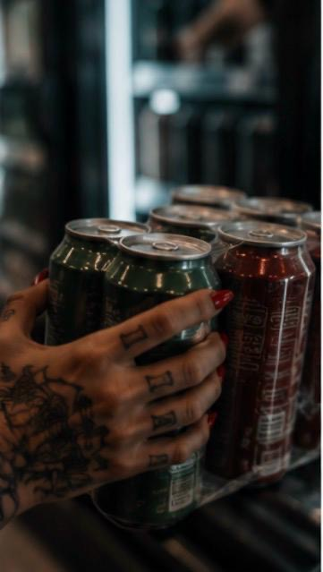

Fuck it. Jeg gidder ikke mer.
Det er jo så kjedelig ikke drikke
Hvem er edru på fest liksom?
Alle spørsmålene.
Hva skal jeg svare denne gangen? At jeg går på antibiotika? Den brukte jeg jo sist.
Noen ganger føles det nesten som om folk synes det er mer ubehagelig at jeg er edru enn at de selv har promille.
Som om min edruelighet blir et speil de ikke har bedt om å se i.
Og denne uroen når jeg ikke drikker – hvor skal jeg gjøre av den?
Tankespinnet.
Rastløsheten.
Hvorfor fungerer tankene mine som de gjør?
Hvorfor kan jeg ikke bare ta ett eller to glass vin med venner?
Hvorfor fikser jeg ikke når promillen begynner å synke?
Jeg holder ikke ut følelsen av å bli edru igjen.
Nedturen.
Tomheten.
Som om jeg ikke klarer å produsere ro, glede og tilfredshet selv.
Hvorfor er jeg så utålmodig etter gleden?
Er jeg alkoholiker?
Nei, jeg kan jo ikke være det.
Jeg drikker jo ikke så mye.
Jeg har som oftest kontroll.
Det er ikke som om jeg gjør noe galt i fylla.
Hvorfor skal jeg slutte? Alle andre drikker jo.
Ved Middelhavet drikker de vin hver dag.
Jeg drikker jo ikke sprit.
Jeg er nesten aldri borte fra jobb.
Jeg lager middag.
Nesten fra bunnen av.
Det er verken skittent eller rotete hjemme hos meg.
Ikke rundt meg, i hvert fall.
Inni meg er en annen sak.
Hvorfor skal jeg gå rundt i et samfunn der man nesten må forsvare at man ikke drikker?
Ingen ville reagert hvis jeg takket nei til heroin.
Ingen ville lent seg fram og spurt:
«Å, tar du ikke heroin? Hvorfor ikke da?»
Ingen spør sånn.
Ingen blir fornærmet.
Ingen prøver å overtale deg.
Men si at du ikke drikker alkohol, og plutselig skylder du folk en forklaring.
Er du gravid?
Går du på medisiner?
Kjører du?
Skal du virkelig ikke ha bare ett glass?
Som om det er merkelig å være edru.
Og for guds skyld, ikke si at du er alkoholiker.
Da blir det stille rundt bordet ganske fort.
Uansett.
Lørdag kveld grillet folk i gata.
Jeg hørte lyden av bokser som ble åpnet, lukta av maiskolber og flintsteik.
Latter.
Stemmer.
Sommer.
Sol.
Varme.
Alt det som hodet mitt fortsatt kobler til en kald øl.
Og nå attpåtil den tida på året der man kan drikke åpenlyst midt på ettermiddagen.
Så.
Fuck it.
Jeg gidder ikke mer.
Det klør fysisk under huden.
Alene denne helga.
Førtiåtte timer med ingenting annet enn min egen edruelighet.
Nei takk.
Så jeg kjørte ned på butikken.
Målrettet.
Åpnet kjøleskapet.
La hånda på sixpacken.
Den med de store boksene, de som er en pint og ikke en halvliter.
Nesten en øl ekstra per pakke det.
Kjenner kulden mot fingrene.
Holder det med seks?
Neppe.
Hva med i morgen?
Det er jo søndag.
Kommer jeg til å våkne med nervene strødd utover senga?
Garantert.
Da burde jeg kanskje kjøpe to pakker til.
Hvor mange timer skal jeg holde ut med nedgående promille?
Hvor mange trenger jeg?
Hoderegningen har allerede startet.
Så kommer den andre stemmen.
Den som heldigvis har blitt litt sterkere.
Ok, Alise.
Kommer du til å ringe han du ikke skal ringe?
Ja.
Hva skjer da?
Du vet hva som skjer.
Uro.
Utrygghet.
Kaos.
Mer av det livet du prøver å komme deg bort fra.
Alt du har jobbet for.
Jeg står fortsatt der.
Fastfrosset.
Snart åtte måneder edru.
Skal jeg virkelig gi opp nå?
Kvalmen kommer.
Ikke fordi jeg ikke får drikke.
Valget er jo til syvende og sist mitt eget.
Men fordi jeg vet sannheten.
Og når du vet, så vet du.
Hvem prøver jeg egentlig å lure?
Jeg har ikke engang kjøpt den første ølen ennå, og allerede planlegger jeg den neste runden.
Så jeg smeller igjen døra til skapet og løper ut.
Kjører hjem.
Låser ytterdøra.
Orker ikke lukta av grillmat.
Orker ikke lyden av latter.
Jeg kjenner ikke mestring.
Jeg kjenner ikke stolthet.
Jeg kjenner bare tomhet.
Jeg vet fortsatt ikke hvordan jeg bygger et godt forhold til meg selv.
Hvordan jeg skal finne gleden igjen.
Jeg har regulert følelsene mine med alkohol så lenge at hjernen min fortsatt tror det er løsningen.
Den vil bare ha det som funker.
En quick fix.
Og den vil ha den nå.
Jeg vet ikke hvor jeg skal flykte.
Bare ligger her. Stirrer i veggen.
Orker ikke lese.
Orker ikke se på TV.
Orker egentlig ingenting.
Jeg er ikke lei meg heller.
Bare flat.
Det er ingen som forteller deg hvor lang tid dette tar.
At alle følelsene jeg har dempet med promille må få lære på nytt, huske hvordan det var uten stimuli.
De vonde.
Men også de gode.
Klokka nærmer seg åtte.
Snart møte.
Jeg har ingenting å dele.
Men jeg har denne ene timen i døgnet.
Den timen med mennesker som vet.
Som vet at dette ikke bare handler om å slutte å drikke.
Som vet at det handler om å komme hjem til seg selv.
Hjem til et hus jeg har latt forfalle så altfor lenge.
Med rom jeg må åpne, ett etter ett.
Tørke støv.
Slippe inn lys.
Og sakte, nesten uten å merke det selv,
begynner det kanskje å ligne et hjem dette her.
